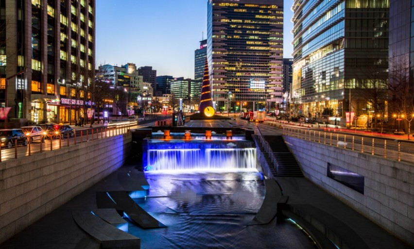

남산공원
면적은 102만 9300㎡으로 서울특별시 공원 중에서 가장 넓다. 남산타워랑 연결된다.

동대문 디자인 플라자
사진찍기 좋은 전시 및 복합문화공간

피크닉
남산 자락에 자리한 옛 공간의 흔적들과 자연의 아름다움이 조화를 이루는 이 곳에서, 시각 예술, 음악, 문학, 음식 등 다양한 분야의 콘텐츠를 만나보실 수 있습니다.

청계광장
서울야경명소중 하나 삼색조명이 어우러진 촛불 분수와 4m 아래로 떨어지는 2단 폭포가 설치되었다.

덕수궁
서울특별시 중구에 있는 조선시대 고종의 거처로 이용된 궁궐
중구 맛집

우래옥
서울 중구 창경궁로 62-29
서울 시내 최고의 평양식 냉면 전문점 중 하나

태극당
서울 중구 동호로24길 7
레트로한 분위기의 빵맛집

금산제면소
서울 중구 소공로6길 13
직접 면을 만들어 판다는 혼밥 맛집
유즈라멘
서울 중구 만리재로 217
쫄깃한식감의 면을 가진 일본식라멘